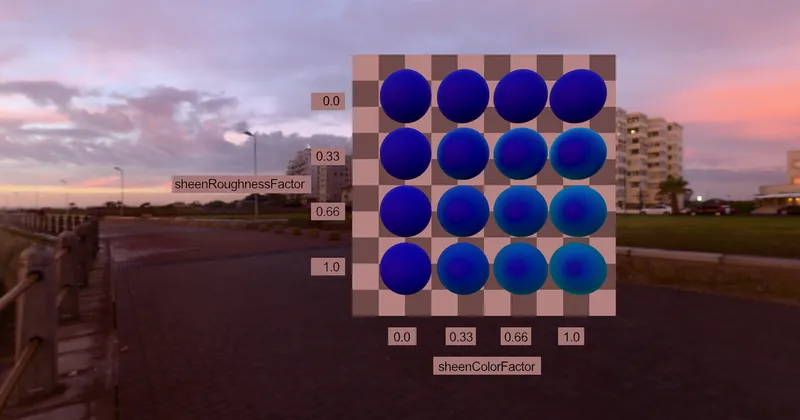

GLTF GLTF Extensions KHR_materials_sheen
Sheen Test Grid - RedGPU WebGPU Example
Tests changes based on Sheen color and roughness in a grid.
Sheen 색상과 거칠기에 따른 변화를 그리드로 테스트합니다.

GLTF GLTF Extensions KHR_materials_sheen
Tests changes based on Sheen color and roughness in a grid.
Sheen 색상과 거칠기에 따른 변화를 그리드로 테스트합니다.
